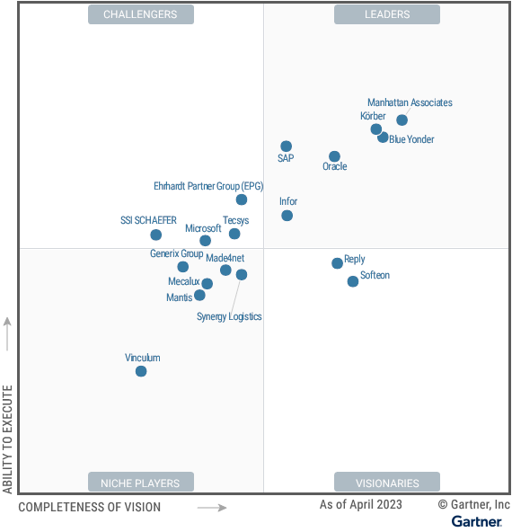

请访问原文链接：Gartner Magic Quadrant for Warehouse Management Systems 2023 查看最新版。原创作品，转载请保留出处。
作者主页：sysin.org
Magic Quadrant for Warehouse Management Systems
Published 8 May 2023
魔力象限
WMS 供应商通过瞄准关键需求（例如拥有成本、自动化/机器人支持、适应性和云服务）来挑战成熟的市场领导者。供应链技术领导者可以利用这项研究来了解 WMS 市场的现状并获得供应商的见解。
市场定义/描述
Gartner 将仓库管理系统 (WMS) 定义为 “帮助管理和智能执行仓库或配送中心 (DC) 运营的软件应用程序”。
WMS 应用程序 提供 核心 功能 ，例如 ：
- 接收
- 储藏
- 库存定位
- 库存管理
- 周期盘点
- 任务交错
- 波次规划
- 订单分配
- 订单拣选
- 补货
- 包装
- 配送
- 劳动力管理
- 自动物料搬运设备 (MHE) 接口
这些系统本身利用移动设备以及条形码，并可能利用 RFID 扫描/传感来形成 WMS 的交易基础。这可以提高定向工作活动的效率，并近乎实时地提供准确的信息 (sysin)。Gartner 还包括 WMS 提供商集成功能——我们称之为扩展的 WMS 功能（请参阅将体系结构框架应用于分层仓库管理系统）——作为此 WMS 评估的组成部分。
这些扩展的 WMS 功能包括：
- 劳动力/劳动力管理
- 开槽
- 堆场管理
- 语音拣选
- 包裹清单
- 轻工制造/配套等增值服务
- 第三方物流 (3PL) 计费
我们不认为这些领域的独立解决方案是本研究的一部分。
整个 WMS 市场分为五种主要类型的类供应商，其中前四类供应商包含在本魔力象限中：
- 应用程序巨头—— 这些供应商提供跨多个应用程序类别的广泛应用程序组合（例如后台财务、人力资本管理 [HCM]、客户关系管理 [CRM]、客户订单管理、制造、企业资源规划 [ERP] 和供应链管理 [SCM]）。虽然这些供应商可能提供各种供应链管理 (SCM) 解决方案，但他们不一定提供集成平台。Infor、Microsoft 、Oracle 和 SAP 被认为是提供 WMS 产品的大型供应 商。
- SCM 套件供应商—— 这些供应商提供整体 WMS，以及两个或多个主要专注于 SCM 的应用程序组合。这可以包括物流（例如，仓储、运输和全球贸易）、供应链规划（SCP）、客户服务（例如，订单管理和全渠道管理）、制造或寻源和采购等方面 (sysin)，但不包括财务等其他职能领域、CRM 或 HCM。虽然这些供应商可能提供各种 SCM 解决方案，但他们不一定提供集成平台（尽管有些供应商提供）。此类供应商包括 Blue Yonder、Körber 和 Manhattan Associates。
- 专业 WMS 套件供应商 — 这些是独立软件供应商 (ISV)，主要关注（但不一定专门）整体 WMS 套件。除了 WMS 之外，他们可能还提供补充功能，但这些功能在其业务中所占的比例仍然不大。此魔力象限中包含的此类供应商包括 Ehrhardt Partner Group (EPG)、Generix Group、Made4net、Mantis、Reply、Softeon、Synergy Logistics、Tecsys 和 Vinculum。
- 物料搬运设备/自动化供应商—— 大多数 MHE 供应商主要专注于提供大型自动化仓库的机电方面的服务。然而，许多供应商还提供一些 WMS 功能作为其产品组合的一部分。只有当 MHE 公司能够证明他们通常在很大程度上独立于 MHE 来销售其打包的 WMS 应用程序时 (sysin)，我们才会将其作为本研究的一部分。这是因为这些公司通常不会向市场提供独立于 MHE 解决方案的 WMS。此魔力象限中包含的此类供应商包括 Mecalux Software Solutions 和 SSI SCHAEFER IT Solutions。
- 独立 WMS 组件供应商 — 未包含在此魔力象限中，这些供应商是专门的 ISV，专门专注于提供可用于补充 WMS 的独立组件；他们不提供完整的 WMS。这些组件的示例包括劳动力/劳动力管理、货位优化、多承运人包裹管理、堆场管理、码头/预约调度、仓库控制系统 (WCS)、仓库执行系统 (WES) 和其他专用系统附加解决方案。对于此类别的供应商，请参阅
仓储和履行供应商指南、堆场管理市场指南和多承运人包裹管理解决方案市场指南。
WMS 市场考虑因素
该魔力象限中的所有解决方案都支持基本的核心 WMS 功能。许多还支持各种级别的扩展 WMS。WMS 的核心功能是收货、入库、存储、盘点和拣选、包装和运输货物的基本功能。扩展的 WMS 功能是补充核心功能的增值功能，例如劳动力管理、货位、堆场管理和码头调度（请参阅应用 架构框架对仓库管理系统 进行分层）。
尽管这是一个非常成熟的市场，但最近的宏观因素和干扰刺激了创新。然而，尽管经济和商业状况对一些供应商和地区来说充满挑战，但预计到 2027 年整体市场将超过 33.5 亿美元，五年复合年增长率 (CAGR) 为 9.9%。WMS 产品在可用性、适应性、决策支持、向上和向下市场的可扩展性、新兴技术的使用和生命周期成本等方面仍然存在差异。此外，客户越来越青睐能够支持端到端供应链和物流流程编排的套件。Gartner 将这些领域称为供应链融合和供应链执行融合（与运营活动的融合有关）。
对于最复杂的操作来说，对 WMS 产品的广度和深度的关注仍然有效，而简单性、可用性和拥有成本等其他因素在不太复杂的环境中则是更重要的因素。然而，我们仍然看到 WMS 市场中高性能、复杂和先进的市场与大众市场之间存在分歧，大众市场只需要 “足够好” 功能 (sysin)。这并不是因为公司选择牺牲功能。这是因为在全球范围内，仓库运营的优势在 Gartner 仓库复杂性模型中处于 3 级或以下。Gartner 将 1 级定义为最基本的仓库操作，将 4 级和 5 级定义为最复杂和自动化的。3 级及以下的仓库不需要、通常也不会使用最先进的功能。请参阅 工具：对您的仓库运营进行分层以确定合适的 WMS 和改进策略， 以获取有关级别设置仓库运营的更多见解。
这种凸显出高端 WMS 解决方案有一个非常明确的市场差异，其中特性/功能和性能至关重要，而成本不是问题。它为高端、功能先进的 WMS 解决方案创造了一个健康但规模较小的市场，该解决方案旨在复杂和精密的 4 级和 5 级操作。相反，在另一个市场中，其他因素占主导地位，例如易用性、可靠性、服务和支持、“足够好” 的功能以及较低的拥有成本。对于 Gartner 的分层模型所称的 2 级和 3 级仓库环境来说这是一个非常大的 WMS 市场。在这里，任何好的 WMS 都可以为公司提供良好的服务，并且他们可以对大型供应商提供的 WMS 或功能不太强大的 ISV WMS 产品感到满意。
尽管功能仍然是第一大用户评估标准，但各个 WMS 提供商的基本核心 WMS 功能在功能上几乎是平等的。鉴于 WMS 市场的成熟状态，以下供应商和产品因素的组合影响了供应商在今年魔力象限中的定位：
- 供应商的市场理解及其对下一代 WMS 和供应链 执行 (SCE) 的愿景
- 供应商在向市场商业化、交付和部署创新方面拥有良好的记录
- 投资解决总拥有成本 (TCO) 和客户实现价值的时间
- 支持组合性、适应性和可扩展性的 WMS 技术架构
- 供应商的云战略、能力和技术架构
- 鉴于 WMS 的使用寿命较长，供应商和产品的长期生存能力
- 当前和预计的收入和客户总数的增长
- 市场知名度、知名度和美誉度
- 产品或供应商差异化 (sysin)
- 与其他应用程序集成并支持跨职能流程编排
- 云架构和部署模型选项（例如，专用或多 租户 云 SaaS）
- 能够将业务目标转化为特定的 WMS 功能要求
- 供应商将新投资商业化以提供更高业务价值的能力
- 供应商销售、实施和支持全球部署的能力
- 供应商通过服务、支持、咨询和培训提供价值的能力
- 生态系统的开放和支持 供应商对合作伙伴
- WMS 中嵌入的工具和技术可促进实施和支持
- 客户体验（来自客户参考和 Gartner 客户互动）
- SCE 融合 策略（无缝集成的 SCE 编排平台）

领导者（Leaders）：
- Manhattan Associates
- Körber
- Blue Yonder
- Oracle
- SAP
- Infor
挑战者（Challengers）： 见图
有远见者（Visionaries）： 见图
特定领域者（Niche Players）： 见图
查看完整报告（限期公开）：https://www.gartner.com/doc/reprints?id=1-2DHZTU0L&ct=230505&st=sb
如何选择
在特定市场内定位技术参与者。
主要技术市场上有哪些竞争参与者？他们如何为您提供长期帮助？Gartner 魔力象限是对特定市场的巅峰研究，可帮您广泛了解市场竞争对手的相对位置 (sysin)。利用图示法和一系列统一的评估标准，魔力象限可帮助您快速确定技术提供商执行其既定愿景的情况，并参照 Gartner 的市场观点了解其表现。
如何使用 Gartner 魔力象限？
面对特定投资机会考虑技术提供商时，请借助 Gartner 魔力象限迈出第一步。
请记住，专注于领导者象限不一定是最好的行动方案。有充分的理由考虑市场挑战者。特定领域者可能比市场领导者更能满足您的需求。这完全取决于提供商如何与您的业务目标保持一致。
Gartner 魔力象限如何发挥作用？
面对快速增长和提供商差异化明显的众多市场，Gartner 魔力象限用图形化方法划分出四类提供商：
- 领导者很好地执行了当前愿景 (sysin)，并为未来做好了充分准备
- 有远见者了解市场发展方向，或者有改变市场规则的设想，但执行效果不尽如人意。
- 特定领域者成功专注于一个小的细分市场，或者目标不明确，创新和表现未能超越竞争对手。
- 挑战者当前表现很好，或者可能在大部分细分市场占据主导地位，但未表现出对市场方向的了解。
试用领导者产品
暂无。

文章用于推荐和分享优秀的软件产品及其相关技术，所有软件默认提供官方原版（免费版或试用版），免费分享。对于部分产品笔者加入了自己的理解和分析，方便学习和研究使用。任何内容若侵犯了您的版权，请联系作者删除。如果您喜欢这篇文章或者觉得它对您有所帮助，或者发现有不当之处，欢迎您发表评论，也欢迎您分享这个网站，或者赞赏一下作者，谢谢！
 支付宝赞赏
支付宝赞赏
 微信赞赏
微信赞赏
赞赏一下